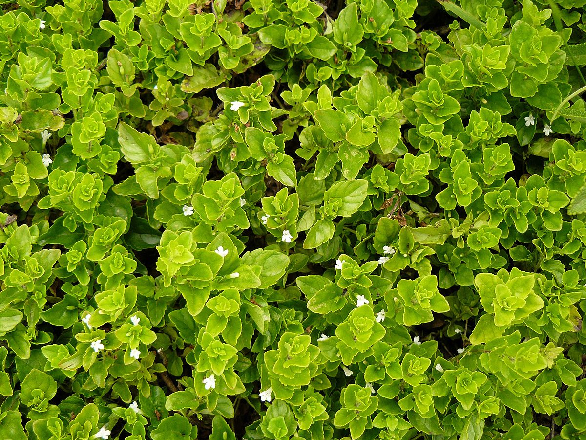
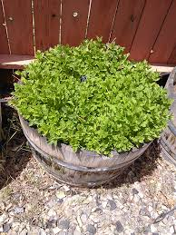

YerbaBuena
Home
Features
Pricing
Blog
Blog Posts
Yerba Buena:
A Refreshing Native Steeped in History
December 13, 2019 • By
Rose
As far back as 1775 and likely much earlier, yerba buena, a California native herb was thriving on the San Francisco peninsula. It was known to be so abundant that native San Franciscans introduced the fragrant herb to Spanish missionaries, who called it yerba buena, meaning “good herb.” In fact, the town of Yerba Buena was named after this plant.
Read more

October 19, 2020 • By
Cathy
Yerba buena also commonly called mint posses aromatic properties and flavour that is widely used in varieties of cuisines. It is also used in traditional medicine since ancient times providing a long list of health benefits from skin to cancer prevention. Discover the many used this wonderful aromatic plant.
Read more

January 21, 2020 • By
Ronald
Yerba buena is also known for its medicinal properties. Yerba buena is used as herbal medicine for the treatment of many ailments which has been traditionally used since ancient times. Studies have shown that Yerba buena contains pulegone, menthol, menthene, menthenone and limonene.
Read more
February 03, 2021 • By
Adam
A study published in the Journal of Ethnopharmacology April 2001, found the temporary infertility effect of yerba buena leaf extract In male albino mice, the petroleum ether extract of the leaves of Mentha arvensis L., at the doses 10 and 20 mg/mouse per day for 20, 40 and 60 days, when administered orally, showed a dose and duration dependent reduction in the number of offspring of the treated male mated with normal females. The results suggest that the petroleum ether extract of the leaves of Mentha arvensis possess reversible antifertility property without adverse toxicity in male mice.
Read more
March 13, 2021 • By
Jose
Yerba buena can be cultivated and grown in a pot or garden. The plant can be available in your local plant nursery or contact your local horticulturist.
Yerba buena containing products such as massage oils, mouth washes, cosmetics and even purified oils and tinctures can be commercially available in supermarkets, health stores and pharmacies.
Read more
April 23, 2021 • By
Mika
Commercial Yerba buena herbal tea is available in tea bags and powders. Most health stores sells this as a regular item. Yerba buena is also available through online orders and delivery. Hierba Buena - Spearmint Herbal Tea has Full Spectrum potent concentration.
It is naturally prepared without the use of toxic ingredients, such as harsh chemical preservatives to ensure all the active and synergistic constituents just like what nature intended. This Yerba buena herbal tea is available in Amazon along with other Yerba buena extracts.
Read more
1
2
3
4